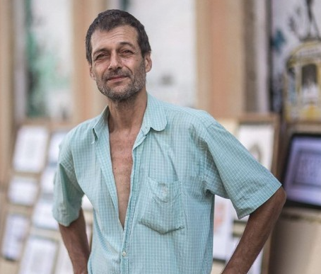
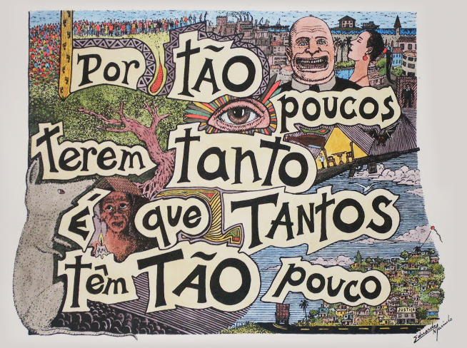
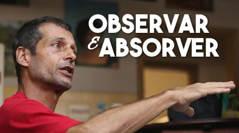
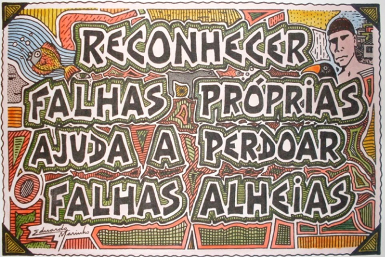
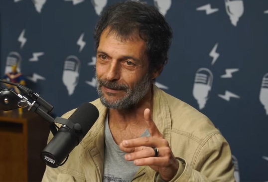
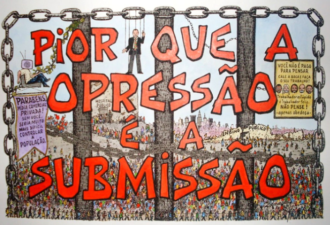
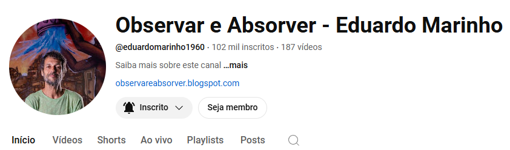

Eduardo Marinho - Artista de Rua

Conheça Eduardo Marinho
Eduardo de Mendonça Marinho (Espírito Santo, 26 de dezembro de 1960) é um artista plástico, escritor, ativista social e filósofo brasileiro.
É mais conhecido na internet como “Artista de Rua” ou “Filósofo de Rua”, embora pareça preferir a primeira denominação.
Buscando um sentido para sua vida — em um determinado momento em que já não podia mais adiar essa busca —, resolveu sair da casa dos pais e abandonar tudo para viver na mendicância.
Se pensarmos na frase: “Se não é loucura, então é coragem”, ele afirma que a sua vida se tornou infinitamente mais interessante e significativa. No entanto, não recomenda que todos sigam esse mesmo caminho, pois ele já passou por diversas situações perigosas.
Em seus diversos vídeos espalhados pela internet, principalmente no YouTube, percebe-se que desde jovem ele já demonstrava um pensamento questionador acima da média, buscando entender as causas da miséria, da pobreza, das desigualdades e de várias mazelas sociais.
Nos últimos anos, Eduardo tem compartilhado seus conhecimentos e experiências de vida nas redes sociais e em eventos e palestras. Seus ensinamentos são valiosos, pois revelam injustiças sobre as quais muitos de nós nunca paramos para refletir profundamente.
Dessa forma, Eduardo Marinho tem se tornado um dos grandes pensadores de nosso tempo.
Pessoalmente, considero um privilégio saber da existência de alguém como ele. É como uma luz que clareia os pensamentos e a alma. É como algo (um conhecimento sobre a vida) que antes estava faltando, mas agora foi revelado.
No livro “Conversando com Deus - Livro I”, de Neale Donaldo Walsh, Deus comenta que jamais nos deixará sem mestres para nos ensinar, independentemente da época. Para mim, Eduardo Marinho é um desses mestres vivos.
|  |  |  |
|  |  |  |
Abaixo, os canais oficiais do Eduardo Marinho.

YOUTUBE: Observar e Absorver - Eduardo Marinho
BLOG: observareabsorver.blogspot.com
INSTAGRAM: eduardomarinho.artistaderua
Eduardo Marinho sobre religião:
"Não importa o que você acredita. O que importa é aquilo que você faz."
Eduardo Marinho sobre homofobia:
"É preciso a gente aprender a ser respeitoso com quem pensa diferente. Quem é bem resolvido sexualmente não tem homofobia. Não tem problema com isso.
Porque no fim das contas, o que me interessa a sexualidade de uma pessoa?
Me interessa a mentalidade, o temperamento, o caráter, a visão de mundo, as ideias, o comportamento, a conduta, como é que ela trata as outras pessoas.
A sexualidade de uma pessoas só me interessa se eu tiver interesse sexual nela!
Eu não vou sair por aí sentindo interesse sexual por todo mundo! Vai ser por uma pessoa.O resto pode ser o que for, não me interessa se tem sexo ou não tem sexo, se é branco, verde, amarelo ou cinza. O que importa é a alma.
É o que a gente precisa perceber. A pessoa vale a alma que ela tem."